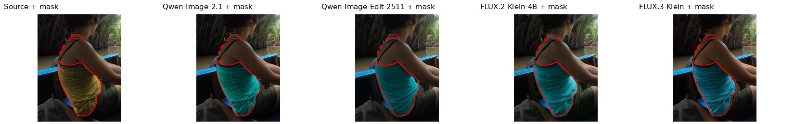
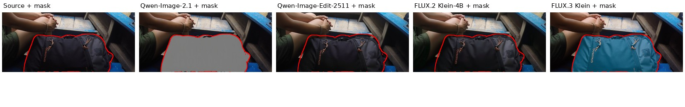

all_models_fail — v2-sa_10006079
Edit the first image at its original size. Execute all numbered instructions. The second image, when present, supplies labeled locators only; omit those marks from the result. A locator selects a source instance; named parts further restrict the edit. For add it selects the support or spatial reference, not the new item outline. Preserve all unrequested content. U1 [ref; box]: Change the color of the woman’s yellow patterned tank top to teal. U2 [no ref; mask]: Remove the selected region.

U1: Change the color of the woman’s yellow patterned tank top to teal.

E: The woman's tank top, originally yellow with a small dark dot pattern, is now teal/green with the same dot pattern and trim retained; the entire selected garment region (body plus the small shoulder/strap-area fragment in the mask) is recolored, completing the attribute change.
P: Skin, hair, black bra strap, green shorts, blue boat bench, canopy, river and palm background are unchanged outside the recolored top; no spill onto neighboring regions.
Q: The teal recolor follows the fabric folds, weave texture and shading of the original top, with clean edges against skin and strap, looking natural under the scene lighting.
E: The woman's yellow dotted tank top (with blue trim) in the source is recolored to a solid teal/cyan in the output, covering the full garment body and the upper shoulder edge within the contour; the separate black bra strap is correctly left untouched.
P: Skin, hair, green shorts, blue boat seats, the duffel bag, and the riverbank/palm background are unchanged outside the tank-top region; no spill beyond the garment boundary.
Q: The teal fabric follows the body contours and folds with coherent shading and edge blending at the armhole and hem, looking like a naturally lit solid-color top.
E: The woman's tank top, originally yellow with a small dark pattern and blue neckline trim, is now recolored to teal/cyan while keeping the same pattern, trim, straps and shape; the requested attribute change is complete on the correct garment.
P: Skin, hair, black bra strap, green shorts, blue boat bench, tire and riverbank foliage are unchanged; the recolor stays within the tank-top boundary with no spill onto arms or background.
Q: The teal fabric retains coherent weave texture, shading and edge blending with the body and trim, matching the scene lighting; no halos or seams are visible.
E: The woman's tank top, originally yellow with a small dotted pattern, is now teal/cyan with the identical pattern, dark neckline trim, and thin black straps retained; the requested recolor is complete over the whole garment.
P: Skin, hair, green shorts, blue boat seats, canopy, river and palm background are unchanged; the recolor stays within the tank-top boundary with no spill onto arms or seat.
Q: The teal fabric keeps the original weave/pattern, shading, folds and edge blending against the straps and skin, looking like a naturally lit teal top.
U2: Remove the selected region.

E: The black Quechua duffel bag pixels are gone, but instead of reconstructing the boat floor/bench behind it the editor left a flat, featureless gray placeholder blob; the requested clean removal revealing background is not achieved.
P: Surrounding content (hands, bracelet, legs, green shorts, blue bench, wooden planks) outside the masked bag area is preserved; the gray fill stays roughly within the target mask without obvious spill onto neighbors.
Q: The filled region is a uniform matte gray patch with no texture, no perspective, no lighting or shadow match to the boat interior, making the edit look like an obvious hole/artifact rather than a natural removal.
E: The black Quechua duffel bag with orange drawstrings beside the woman is still fully present and identical in the output; the requested removal was not performed at all.
P: Because no edit was applied, the hands, legs, boat planks and surrounding background remain exactly as in the source with no spill or collateral change.
Q: There is no edited fragment in this region; the retained bag and surroundings look natural and artifact-free (vacuously passing).
E: The black Quechua duffel bag with orange drawstrings and logo is still fully present in the output crop; the requested removal was not performed at all.
P: Hands, bracelet, legs, green shorts, wooden planks and blue bench around the bag region are identical to the source; no unrelated content was altered.
Q: The bag region is essentially unchanged from the source, so it remains visually natural with consistent lighting and shadows.
E: The instruction was to remove the black Quechua duffel bag, but in the output the bag is still fully present (same shape, zippers, drawstrings, logo) and merely recolored teal; the removal operation was not performed.
P: Neighboring content (hands, bracelet, legs, green shorts, wooden planks, blue seat, tire) is preserved; the only change is confined to the bag region itself.
Q: The recolored teal bag looks visually coherent (consistent material, zippers, shadows), but it is an unauthorized recolor rather than the requested removal, leaving an object that should not exist.